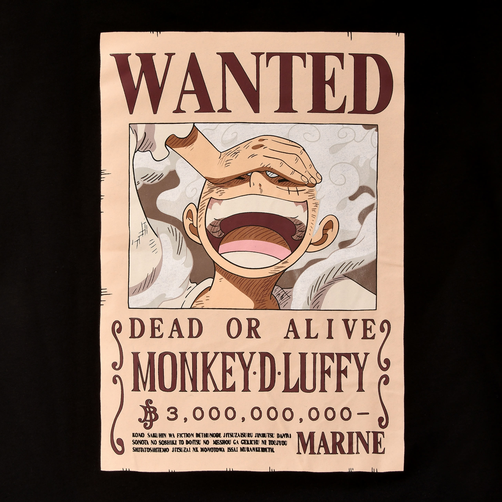
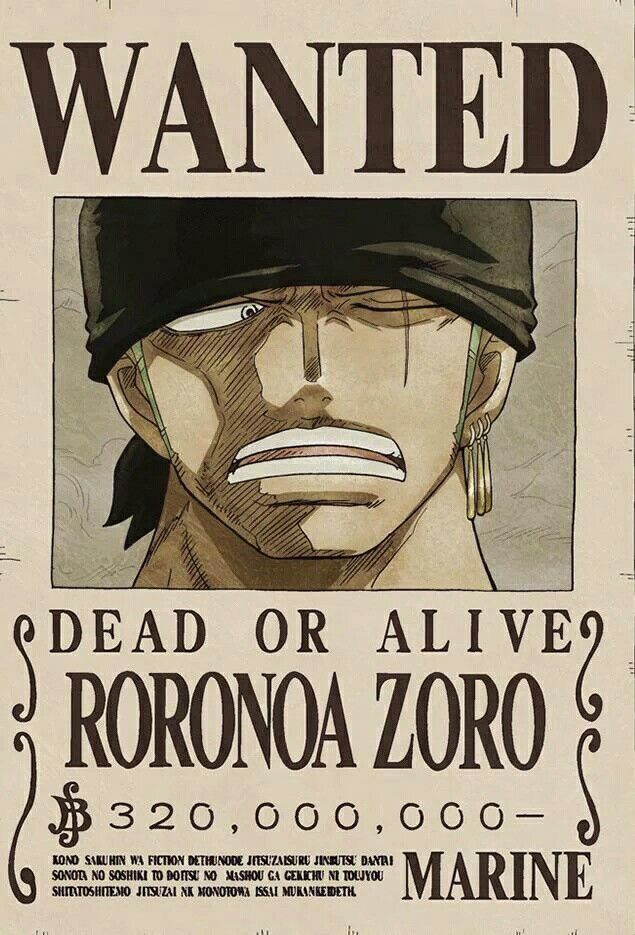
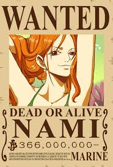
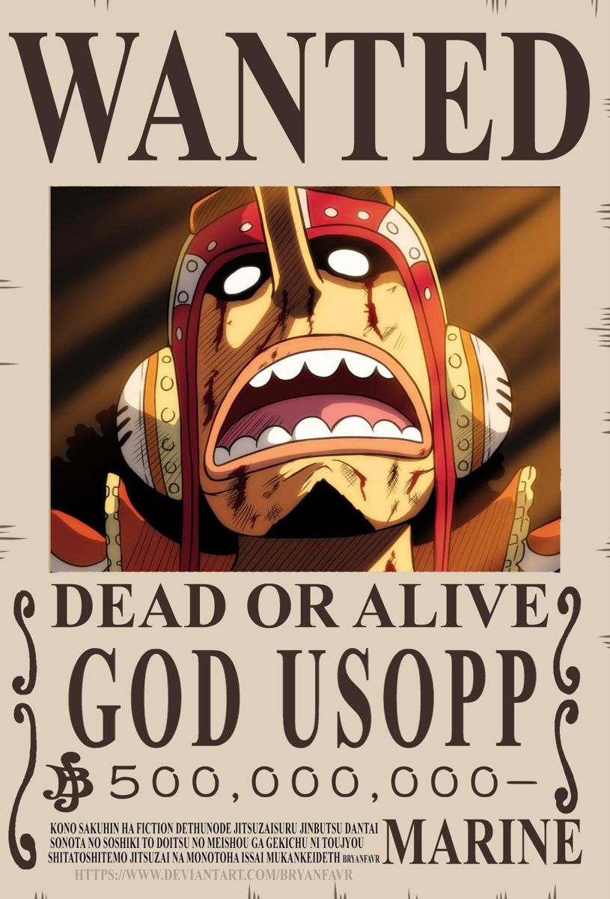
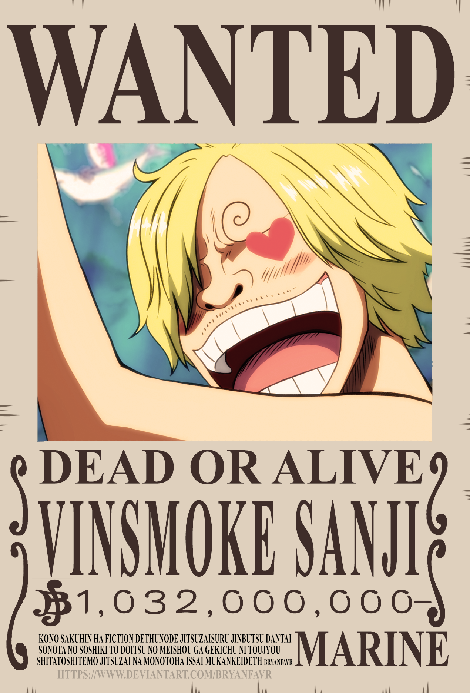

Historia
Esto son los cinco primeros mugiwaras, navegaron por todo el East Blue en el Going Merry. Entraron al Grand Line haciendo una promesa cada uno.
Staff

Monkey D. Luffy
Capitán
Luffy, capitán de los mugiwara. Medio boludo pero es muy de confiar.

Roronoa Zoro
Vice-capitán
Espadachin y VC, mano derecha de Luffy.

Nami
Navegante
Navegante de los mugiwara, define las rutas a tomar para que tenga que ser Luffy el que lo haga.

Usopp
Tirador
Bastante cagón, es el tirador de los mugiwaras.

Vinsmoke Sanji
Cocinero
Cocinero de los mugiwaras, es el tercero mas fuerte.